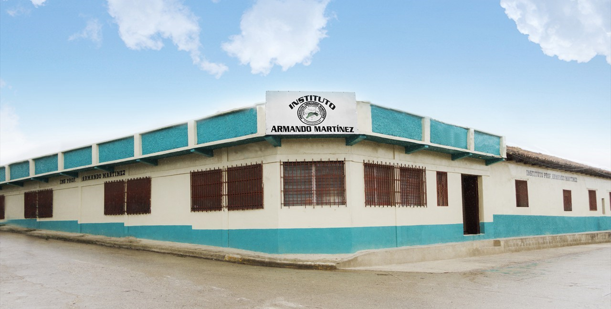
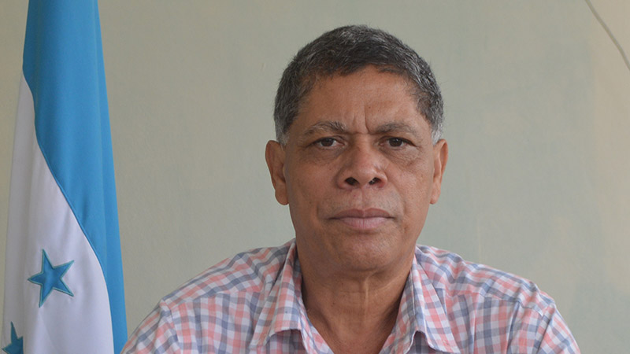
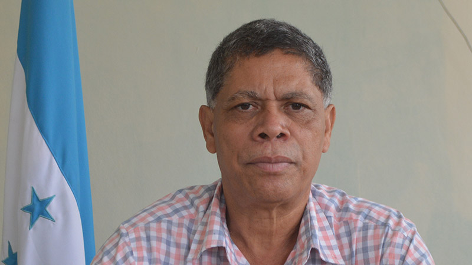

Historia del Instituto Armando Martínez

El Instituto Armando Martínez fue fundado en 2007 en el municipio de El Paraíso, departamento de El Paraíso, Honduras. Nació como respuesta a la creciente demanda educativa en la región, especialmente tras el crecimiento poblacional que hizo insuficiente la capacidad del Instituto Alejandro Flores, la primera institución educativa de nivel medio en la zona. La creación del instituto fue posible gracias a la gestión del alcalde municipal Ovidio Segura y el diputado Mario Segura, quienes apoyaron la iniciativa con recursos y respaldo político .
Desde su inicio, el instituto ha enfrentado desafíos significativos, incluyendo limitaciones de infraestructura y recursos. Sin embargo, ha logrado avances importantes gracias al esfuerzo conjunto de docentes, padres de familia y autoridades locales. Por ejemplo, se han realizado mejoras en el edificio original, incluyendo la instalación de una segunda planta, la renovación del sistema eléctrico y la adquisición de nuevo mobiliario para el laboratorio de ciencias y la sala de informática .
Actualmente, el Instituto Armando Martínez ofrece una educación de calidad en niveles de Ciclo Común y Bachillerato Técnico Profesional en áreas como Informática, Contaduría y Finanzas, Administración de Empresas y Ciencias y Humanidades. Cuenta con una matrícula de aproximadamente 700 estudiantes, que provienen tanto de la zona urbana como de comunidades rurales cercanas. La institución opera en tres jornadas: matutina, vespertina y nocturna, para adaptarse a las necesidades de su diversa población estudiantil .

Una vez más son las fuerzas vivas que salen a la palestra ante la necesidad de crear otra institución académica que solventara la crisis de espacio en el “Alejandro Flores”. Así surge la fundación del Instituto Técnico “Armando Martínez”. Fue creado el 2007, mediante apoyo y gestión política del alcalde municipal Ovidio Segura (Q.D.D.G.) y el diputado Mario Segura. Fue un comienzo difícil, los vaivenes de la política fueron el principal obstáculo para el desarrollo de actividades normales de la institución académica. El profesor Obdulio Figueroa es el actual y primer director desde el 28 de agosto del 2007 hasta la fecha del naciente, en aquel momento, Instituto Técnico “Armando Martínez”. “Asumir la dirección constituyó un reto enorme ante la carencia de todo lo elemental, pero hemos avanzado gracias al soporte del personal docente, padres de familia y las autoridades locales que han brindado apoyo en la parte de infraestructura para la mejora y cambio de techados del viejo edificio donde funcionó el Instituto Técnico “Alejandro Flores”, detalló Figueroa.
El Instituto Armando Martínez fue fundado en 2007 en el municipio de El Paraíso, departamento de El Paraíso, Honduras. Nació como respuesta a la creciente demanda educativa en la región, especialmente tras el crecimiento poblacional que hizo insuficiente la capacidad del Instituto Alejandro Flores, la primera institución educativa de nivel medio en la zona. La creación del instituto fue posible gracias a la gestión del alcalde municipal Ovidio Segura y el diputado Mario Segura, quienes apoyaron la iniciativa con recursos y respaldo político .
Desde su inicio, el instituto ha enfrentado desafíos significativos, incluyendo limitaciones de infraestructura y recursos. Sin embargo, ha logrado avances importantes gracias al esfuerzo conjunto de docentes, padres de familia y autoridades locales. Por ejemplo, se han realizado mejoras en el edificio original, incluyendo la instalación de una segunda planta, la renovación del sistema eléctrico y la adquisición de nuevo mobiliario para el laboratorio de ciencias y la sala de informática .
Actualmente, el Instituto Armando Martínez ofrece una educación de calidad en niveles de Ciclo Común y Bachillerato Técnico Profesional en áreas como Informática, Contaduría y Finanzas, Administración de Empresas y Ciencias y Humanidades. Cuenta con una matrícula de aproximadamente 700 estudiantes, que provienen tanto de la zona urbana como de comunidades rurales cercanas. La institución opera en tres jornadas: matutina, vespertina y nocturna, para adaptarse a las necesidades de su diversa población estudiantil .
Nuestra historia
EL PARAÍSO, El Paraíso. Los procesos educativos de este municipio históricamente han sido producto del esfuerzo y voluntad de sus hijos, particularmente de la generación del 40, cuya determinación por mejorar la calidad de vida y formación intelectual de sus hijos lucharon denodadamente por la creación de un centro de educación media que viniera a solventar una necesidad que, nadie del sector gubernamental de la mitad del siglo XX le dio importancia. En otras palabras, lo que este municipio ha logrado durante los últimos 75 años es producto de sus propias aspiraciones. La primera institución educativa de educación media se fundó en la década de los 50. El Instituto Alejandro Flores, hoy un centro con diferentes carreras técnicas y bachillerato en humanidades. Sin embargo, después de muchos años, debido al crecimiento poblacional, era urgente la creación de otro colegio que viniera a solventar la gran demanda educativa del municipio.
Una vez más son las fuerzas vivas que salen a la palestra ante la necesidad de crear otra institución académica que solventara la crisis de espacio en el “Alejandro Flores”. Así surge la fundación del Instituto Técnico “Armando Martínez”. Fue creado el 2007, mediante apoyo y gestión política del alcalde municipal Ovidio Segura (Q.D.D.G.) y el diputado Mario Segura. Fue un comienzo difícil, los vaivenes de la política fueron el principal obstáculo para el desarrollo de actividades normales de la institución académica. El profesor Obdulio Figueroa es el actual y primer director desde el 28 de agosto del 2007 hasta la fecha del naciente, en aquel momento, Instituto Técnico “Armando Martínez”. “Asumir la dirección constituyó un reto enorme ante la carencia de todo lo elemental, pero hemos avanzado gracias al soporte del personal docente, padres de familia y las autoridades locales que han brindado apoyo en la parte de infraestructura para la mejora y cambio de techados del viejo edificio donde funcionó el Instituto Técnico “Alejandro Flores”, detalló Figueroa.